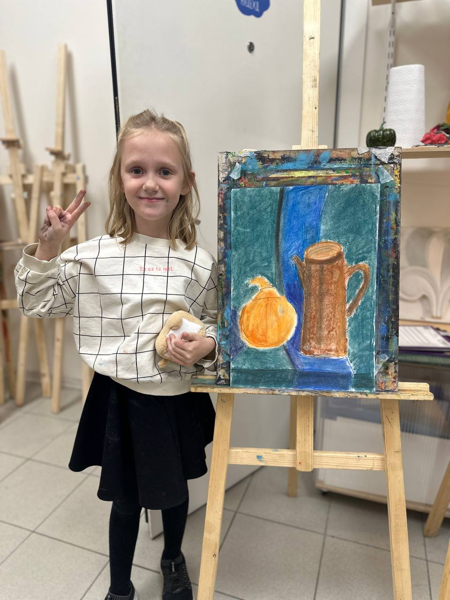
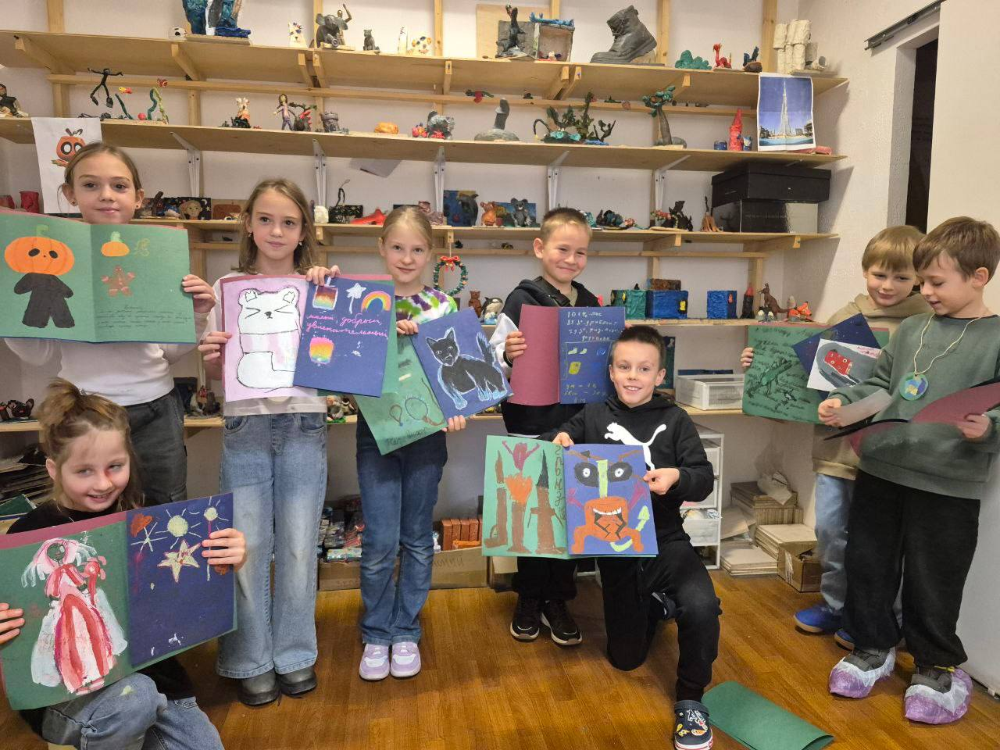
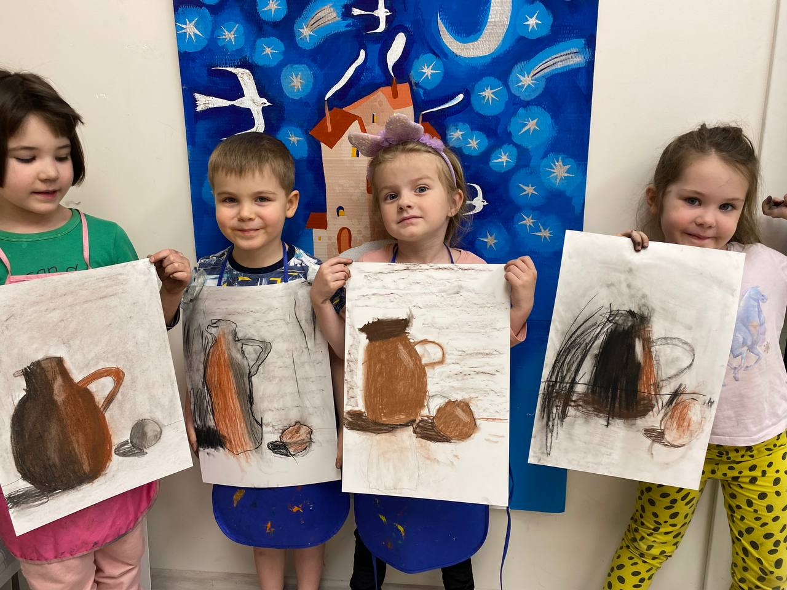
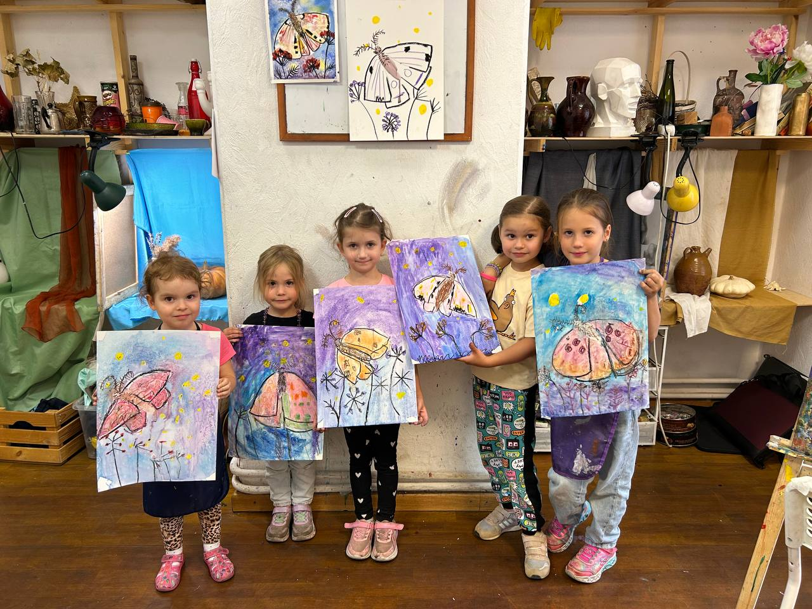
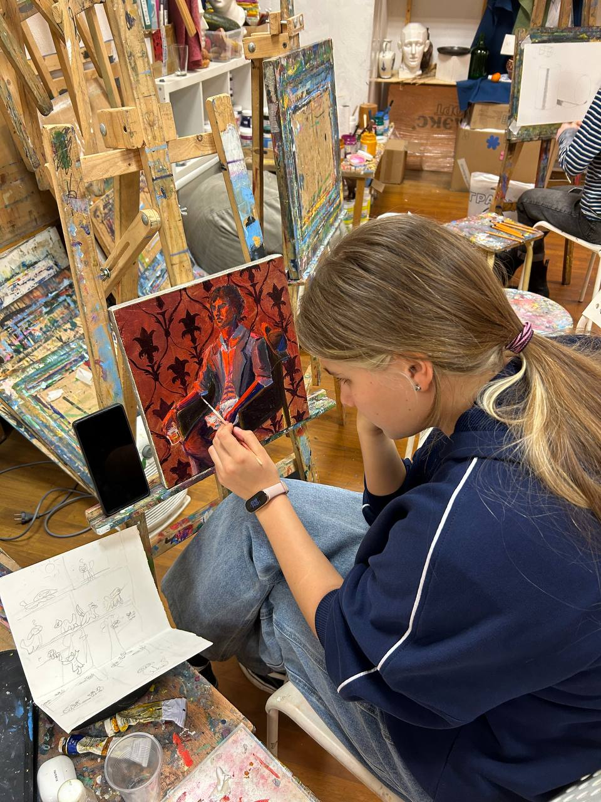
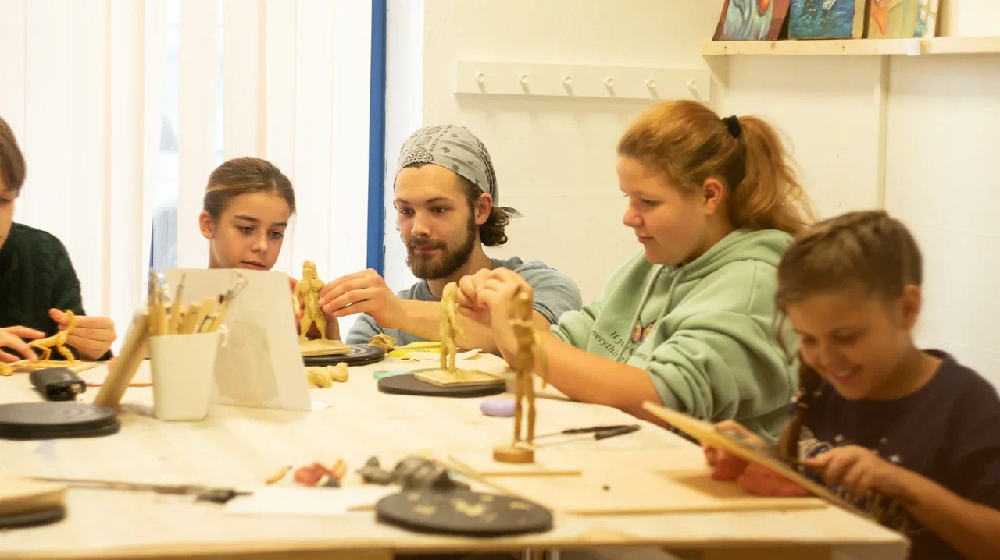
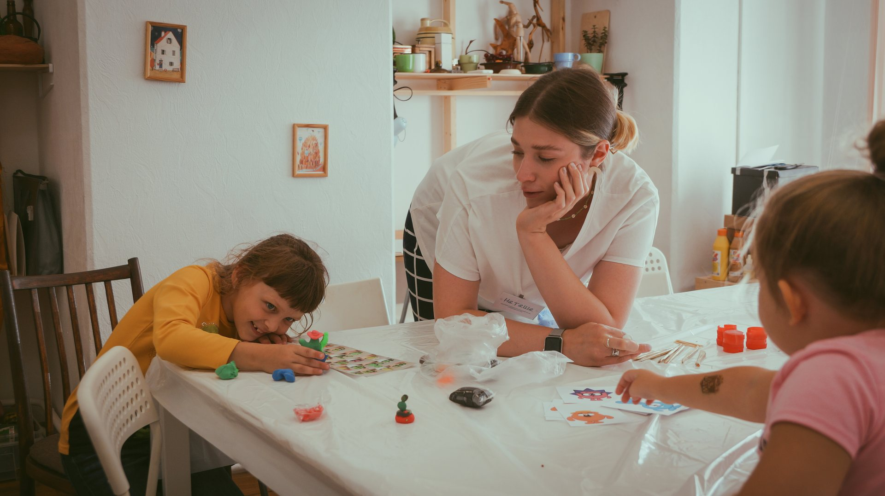
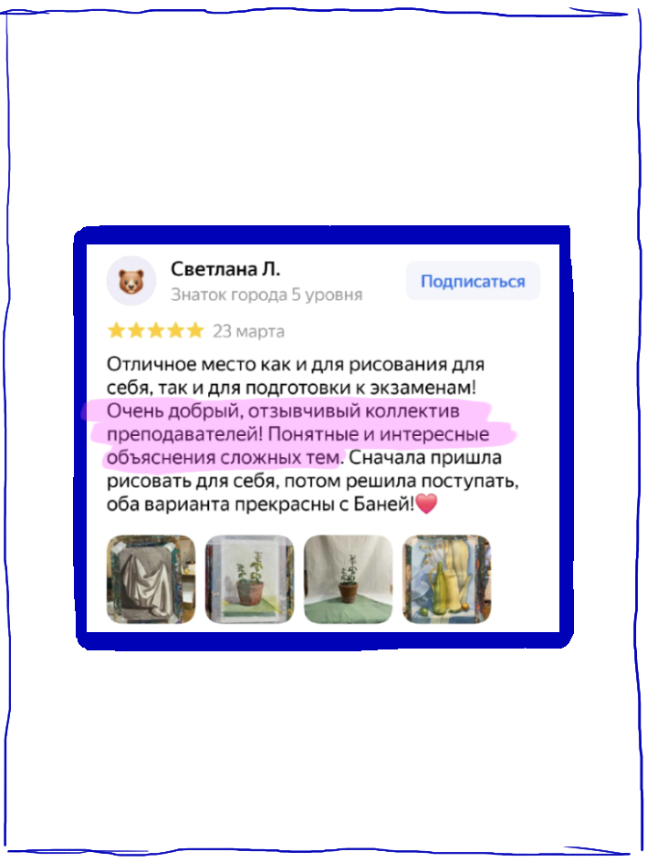
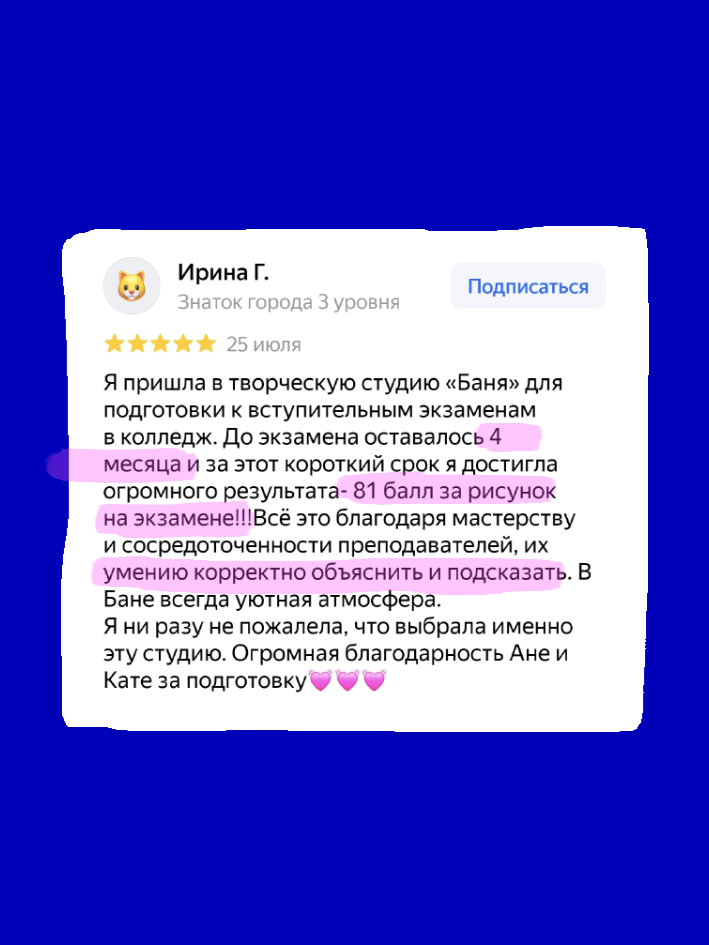
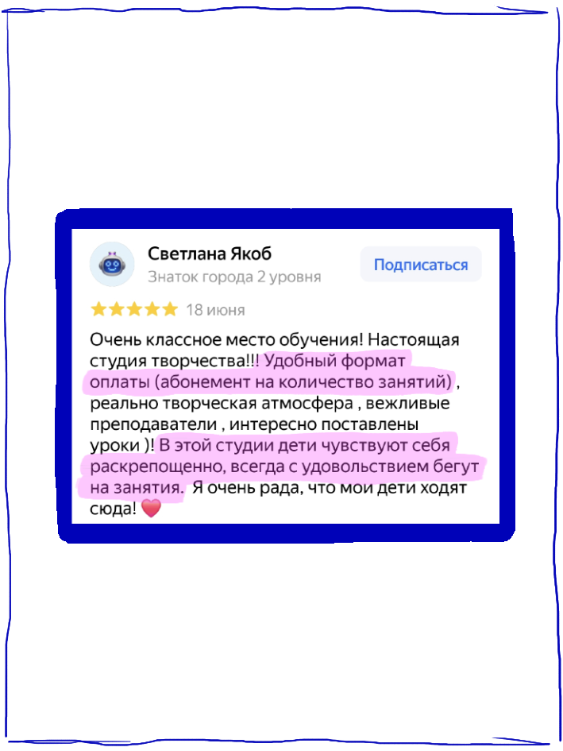

филиала в Москве и более 1000 учеников


понимать, а не срисовыватьшкола рисования «баня»
Самая смешная (и научная!) школа рисования
для детей 4–13 лет в Москве
учим понимать правила, а не срисовывать
объясняем принципы рисования понятными словами, чтобы ваш ребёнок смог сам нарисовать всё, что придумает
два филиала в Москве
Выберите тот, что ближе
ул. Снежная, 17к2
Открыть карту ↗на юге · 7 минут от метроЧертановомкр Северное Чертаново, 1к1
Открыть карту ↗наши ученики ежегодно участвуют в выставках — и побеждают
у нас есть лицензия на образовательную деятельность
по единому абонементу можно ходить на все направления
забота + академическая база
Почему нас так любят родители?

здесь можно быть собой- 01
мы не учим по шаблону, а объясняем правила рисования простыми и смешными словами :)
- 02
придерживаемся принципа нескучного академизма: учим понимать форму, объём и композицию в интересных для ребёнка заданиях
- 03
наши ученики регулярно участвуют в выставках и становятся призёрами всероссийских и международных конкурсов
- 04
в бане никто не останется без заботы: администраторы посушат варежки ребёнка, покормят его обедом или развлекут играми, если вы задерживаетесь
- 05
всё организовано так, чтобы маленькие художники сами бежали на занятия — скорее придётся уговаривать их пойти домой
- 06
единый абонемент на все направления — ходите по удобному графику и сочетайте занятия; списываем их только после посещения
Наша цель — научить замечать, анализировать, вдохновляться. А умение красиво рисовать — просто побочный эффект :)
единый абонемент
Наши направления
Не выбирайте, а сочетайте в одном абонементе разные направления

01для детей 4–10 лет
Рисование и скульптура
1 часматериалы включенымини-группы 4–5, 6–8 и 8–10 лет
На рисовании изучаем художественные инструменты и понятия, учимся создавать объём, смешивать любой цвет без грязи и составлять сложные объекты из простых. На скульптуре изучаем форму, лепим из пластилина с каркасами фигуры животных и людей, природные и интерьерные композиции.
На каждом занятии получаются уникальные работы — каждый может выразить себя в творчестве.

02для детей 8–13 лет
Комикс и иллюстрация
1 час — 8–10 лет2 часа — 11–13 летматериалы включены
Придумываем новые образы привычным предметам, своих персонажей и целые сюжеты, изучаем принципы стилизации и утрирования, учимся находить собственный уникальный стиль. Работаем маркерами, красками и в смешанных техниках.
Идеально дополняет академическое рисование и подходит ребятам, которые увлекаются аниме.
 03
03для детей 11–13 лет
Рисунок и живопись
2 часарисунокживопись и композиция
Изучаем основы рисунка, живописи и композиции, учимся анализировать натуру и рисовать осознанно. Рассуждаем, какие приёмы помогают создавать объём и настроение, показывать текстуры и управлять вниманием зрителя. Рисуем натюрморты, пейзажи, архитектуру, интерьеры, а иногда даже портреты.
Взяли лучшее из программ художественных школ и добавили смешинку, чтобы подросткам было интересно :)
первое знакомство
Попробуйте любое направление бесплатно
Оставьте телефон — администратор напишет вам и подберёт группу.
рядом, когда нужно
Наши учителя
Мы не рисуем за ученика, а помогаем ему увидеть закономерность, попробовать и найти собственное решение.

Помогу не бояться чистого листа и найти собственное решение — даже если сначала кажется, что «не получится» :)

Не исправляю работу за ученика. Задаю вопросы и показываю приёмы, чтобы ребёнок сам понял, как сделать лучше.

На занятии можно пробовать, ошибаться, смеяться и снова пробовать. Именно так появляется настоящая самостоятельность.
говорят лучше нас
Что говорят родители!







никакого экзамена
Как проходит бесплатное пробное занятие
- 01
Вы выбираете удобное время из расписания
- 02
Мы подбираем группу по возрасту и навыкам
- 03
Ребёнок занимается вместе с ровесниками под чутким руководством педагога
- 04
После занятия вы получаете обратную связь
- 05
Если вам всё понравилось — выбираете абонемент и становитесь частью сообщества творчественных!
поможем разобраться
Есть вопрос?
Оставьте номер — администратор свяжется с вами, расскажет о программах и поможет выбрать подходящую группу.
единый абонемент
Цены
Занимайтесь по удобному графику — мы не привязываем вас к одной и той же группе.
занятия списываем только после посещениядля 4–10 лет материалы включеныможно получить налоговый вычетпосле пробного занятия скидка 10%
4–10 лет · 1 час
Рисование + скульптура
разовое1 500 ₽
4 занятия · 5 недель5 600 ₽
8 занятий · 2,5 месяца10 500 ₽
16 занятий · 5 месяцев18 000 ₽
8–13 лет · 2 часа
Рисунок + живопись + комикс
разовое2 200 ₽
4 занятия · 5 недель8 600 ₽
8 занятий · 2,5 месяца16 000 ₽
16 занятий · 5 месяцев29 000 ₽
Первое занятие — бесплатно
спросить — нормально
Частые вопросы!
А что, если ребёнок никогда не рисовал?+
Это отличный повод начать. Мы принимаем новичков, подбираем группу по возрасту и навыкам и объясняем базовые принципы простыми словами — без требования что-то уметь заранее.
Можно ли присоединиться в середине года?+
Да. Программы устроены так, чтобы к группе можно было присоединиться в течение года. Администратор подберёт подходящий уровень и время.
Нужно ли покупать материалы и какие?+
Для ребят 4–10 лет все материалы входят в стоимость. Для старших групп администратор заранее пришлёт короткий список того, что понадобится.
Что делать, если пропустили занятие?+
Предупредите администратора. Мы отмечаем только фактические посещения и не списываем занятие в случае пропуска, пока действует абонемент.
Как распределяются дети по группам?+
По возрасту и навыкам: 4–5, 6–8, 8–10 и 11–13 лет. После заявки уточним опыт ребёнка и предложим подходящую группу.